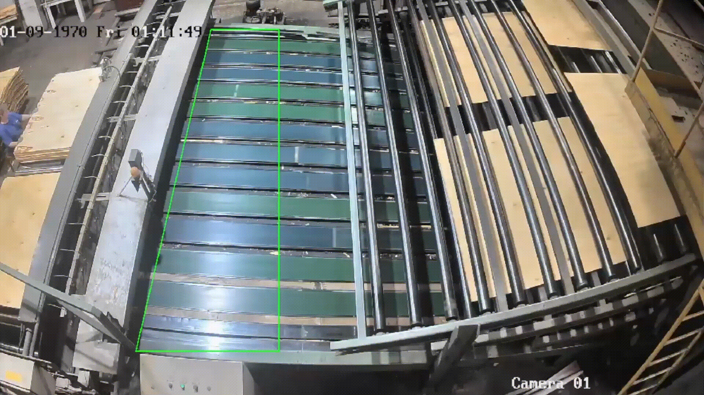

Система компьютерного зрения для подсчёта и измерения объектов на конвейере

Задача
- Реализовать систему для подсчёта и измерения размеров объектов на конвейере в реальном времени.
Ограничения
- Размещение и параметры камеры не известны заранее.
- Наличие засветов на видеопотоке.
- Возможные перебои с доступом к общей БД.
- Искажённая перспектива получаемого видеопотока.
Решение
- Реализация сохранения результатов в локальной БД при перебоях с доступом к общей БД и перенос после восстановления.
- Реализация таблицы масштабов для определения размеров объектов с учётом искажённой перспективы видеопотока.
- Определение пороговых значений для исключения влияния засветов.
Результат
- Перевод учёта с ежеквартального на учёт в реальном времени.
- Обеспечение точности 98,6% при сравнении с реальными размерами объектов.
- Система оповещений при перебоях с доступом к общей БД и отсутствии видеопотока.